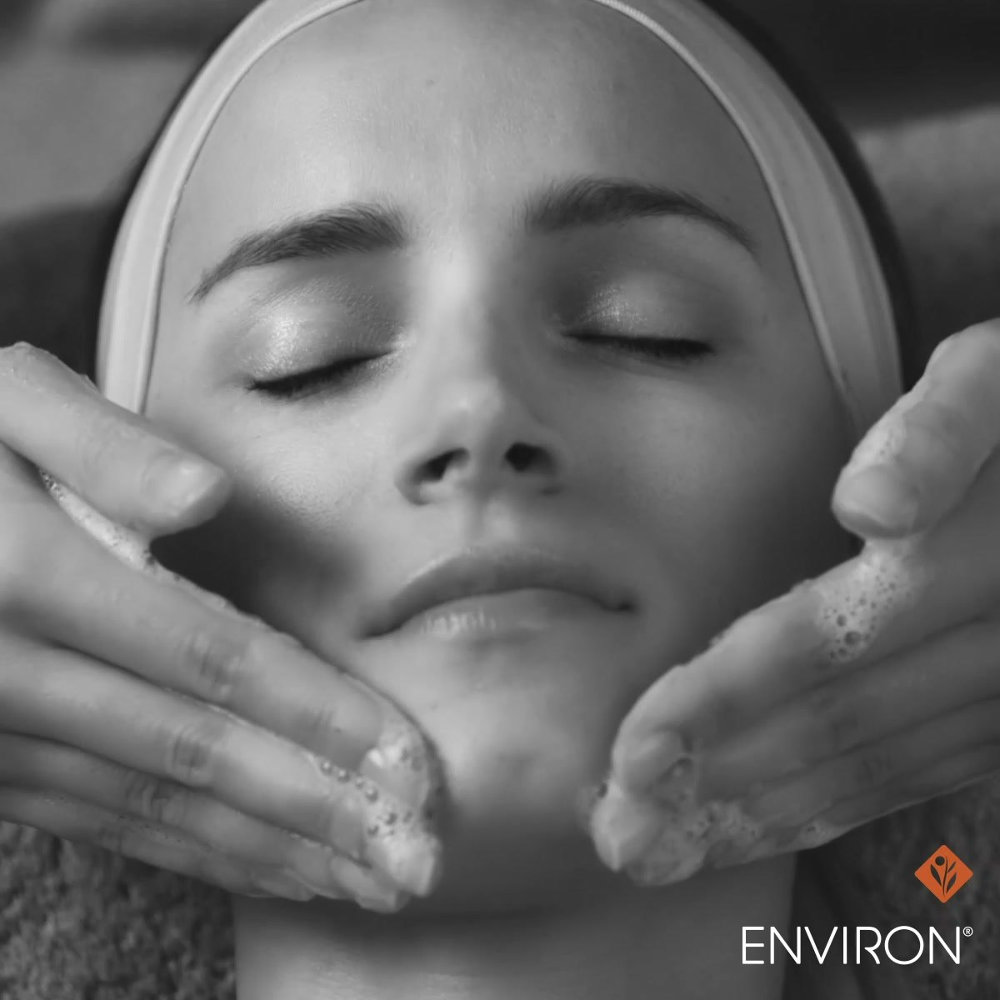
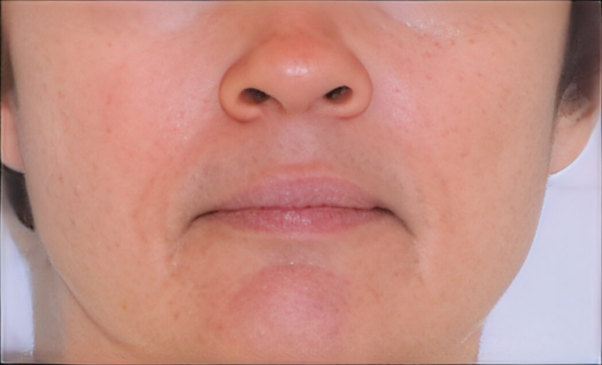
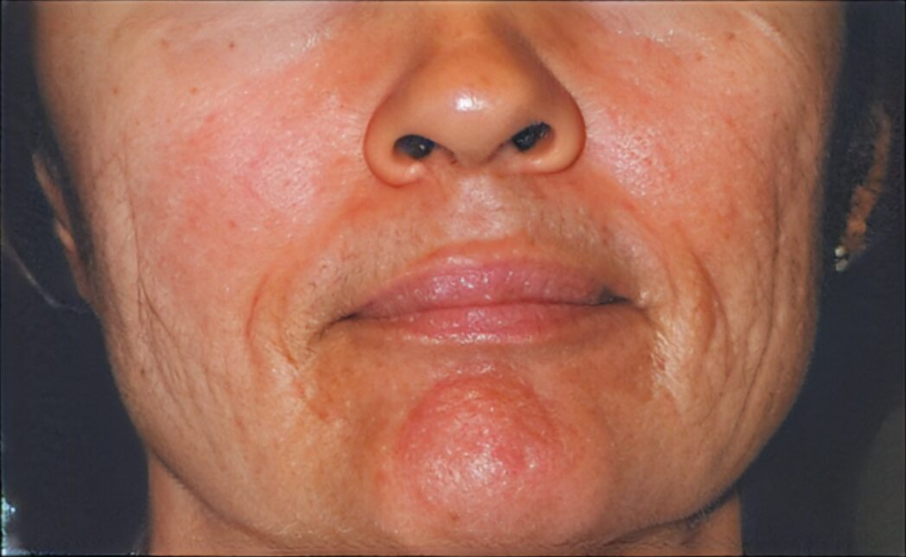
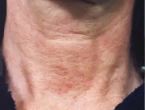
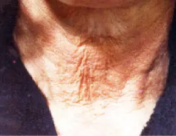
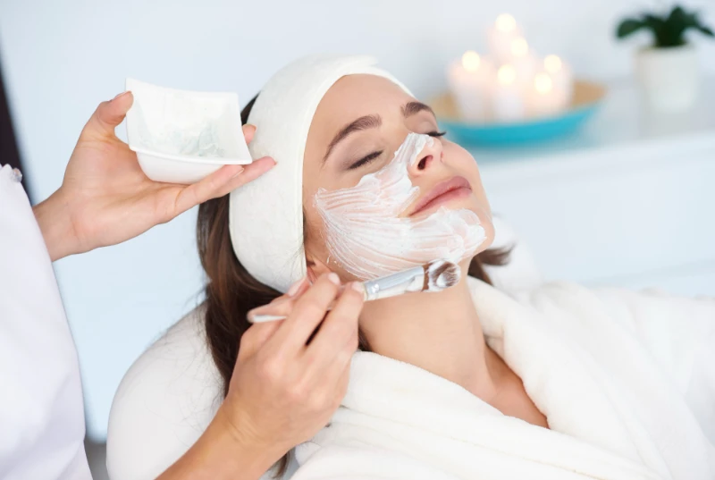

Treatments / Facials & Skin / Environ
Environ facials
Vitamin-rich facials from Environ, the skincare brand founded by plastic surgeon Dr Des Fernandes. We build vitamin A into your skin step by step, for results that last.
- From £85
- 60 min
- A home-care plan made for you
How Environ works
Vitamin A is essential for healthy skin, but skin needs time to get used to it. Environ's Vitamin STEP-UP System™ raises the level gradually, so your skin gets stronger without irritation. Your therapist sets your starting point and moves you up as your skin is ready.

Your Environ journey
Find your step
A skin assessment sets the vitamin A level your skin is ready for.
Treat
Your facial or Cool Peel uses Environ's Ionzyme® DF device, which uses sound waves and a gentle ionic current to push vitamins deeper.
Step up
You use Environ at home and move up the STEP-UP System™ as your skin gets stronger.
Why clients choose it
- Targets fine lines, sun damage, pigmentation, dehydration and redness
- Results build over time, rather than fading after a week
- A plan built for your skin, with home care that works with your facials
How it compares
- Choose Environ for lasting change in ageing, sun damage or pigmentation.
- Choose HydraFacial instead for an instant glow and clear pores.
- Choose Dermalogica instead for a shorter facial tailored to breakouts or sensitivity, from £60.
Treatments and prices
Essential Facial Collection
Vitamin facials, tailored to your skin.
A power collagen facial that smooths fine lines and restores firmness. Best for premature ageing, sun damage and loss of firmness.
Hydrates with hyaluronic acid and vitamins, and strengthens the skin barrier. Best for dehydrated, tight or stressed skin.
Reduces visible redness and restores balance. Best for sensitive or reactive skin.
Brightens and evens skin tone with vitamin A and antioxidants. Best for pigmentation, uneven tone and dullness.
Cool Peels
Gentle, non-invasive peels.
Softens the look of fine lines and sun damage. Best for ageing and uneven skin.
Buffs and revives dry, tired skin, with no visible peeling. Suitable all year round.
Purifies and helps control congestion. Best for breakout-prone skin.
A lactic acid peel that fades the look of sun-related unevenness.
Concentrated vitamin C, freshly mixed for you, for a more even tone and texture. Best for sun-damaged, pigmented or mature skin.
Add-on
A sonic brush deep-cleans, then ultrasonic exfoliation lifts dead skin, helping your skin absorb the Environ actives.
Real results


BeforeAfter

BeforeAfter BeforeAfter
BeforeAfterBefore you book
Our Environ facials use the Ionzyme® DF device. Please tell us before booking if you have: a skin infection or cold sores; very sensitive, allergy-prone or highly vascular skin; inflamed, swollen or sunburnt skin; a pacemaker; pregnancy; epilepsy; porphyria; multiple sclerosis; open cuts or wounds; metal pins or plates in the face, or many metal fillings; or ear problems such as tinnitus, infections or hearing implants (a doctor's consent is needed). Please also wait two weeks after Botox or fillers.
It's not required, but it gives the best results. Your therapist will recommend the right products and step for you.
Yes, with the right timing. Your therapist will plan it with you.
